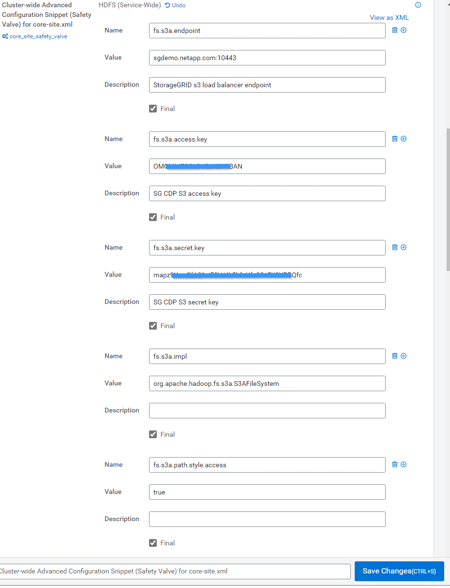

ドキュメントの変更をリクエスト
ドキュメントの変更をリクエスト GitHub で編集
GitHub で編集 寄稿者向けガイド
寄稿者向けガイドStorageGRID でCloudera Hadoop S3Aコネクタを使用します
寄稿者
Hadoopは、データサイエンティストに今しばらくの間愛用されてきました。Hadoopでは、シンプルなプログラミングフレームワークを使用して、複数のコンピュータクラスタにまたがる大規模なデータセットを分散処理できます。Hadoopは、ローカルのコンピューティングとストレージを所有するマシンごとに、単一のサーバから数千のマシンにスケールアップするように設計されています。
S3AをHadoopワークフローに使用する理由
データ量の増加に伴い、新しいマシンにコンピューティングとストレージを個別に追加するアプローチは非効率的になっています。リソースを効率的に使用し、インフラを管理するという課題は、リニアに拡張する必要があります。
このような課題に対処するために、Hadoop S3AクライアントはS3オブジェクトストレージに対する高性能なI/Oを提供します。S3Aを使用してHadoopワークフローを実装することで、オブジェクトストレージをデータリポジトリとして活用でき、コンピューティングとストレージを分離することができます。これにより、コンピューティングとストレージを別々に拡張できます。コンピューティングリソースとストレージを分離することで、コンピューティングジョブに適切な量のリソースを割り当て、データセットのサイズに基づいて容量を提供することもできます。そのため、Hadoopワークフローの総所有コストを削減することができます。
StorageGRID を使用するようにS3Aコネクタを構成します
前提条件
-
StorageGRID S3エンドポイントのURL、テナントS3アクセスキー、およびHadoop S3A接続テスト用のシークレットキー。
-
クラスタ内の各ホストに対するClouderaクラスタとrootまたはsudo権限を付与して、Javaパッケージをインストールします。
2022年4月時点で、StorageGRID 11.0.14とCloudera 7.1.7のJava 11.0.14が、11.5および11.6に対してテストされました。ただし、Javaのバージョン番号は新規インストール時と異なる場合があります。
Javaパッケージをインストールします
-
を確認します "Clouderaサポートマトリックス" を参照してください。
-
をダウンロードします "Java 11.xパッケージ" Clouderaクラスタオペレーティングシステムと同じです。このパッケージをクラスタ内の各ホストにコピーします。この例では、CentOSにrpmパッケージを使用しています。
-
各ホストにrootとしてログインするか、sudo権限を持つアカウントを使ってログインします。各ホストで次の手順を実行します。
-
パッケージをインストールします。
$ sudo rpm -Uvh jdk-11.0.14_linux-x64_bin.rpm
-
Javaがインストールされている場所を確認します。複数のバージョンがインストールされている場合は、新しくインストールしたバージョンをデフォルトに設定します。
alternatives --config java There are 2 programs which provide 'java'. Selection Command ----------------------------------------------- +1 /usr/java/jre1.8.0_291-amd64/bin/java 2 /usr/java/jdk-11.0.14/bin/java Enter to keep the current selection[+], or type selection number: 2
-
この行を/etc/profile’の末尾に追加しますパスは、上記の選択のパスと一致する必要があります。
export JAVA_HOME=/usr/java/jdk-11.0.14
-
次のコマンドを実行して、プロファイルを有効にします。
source /etc/profile
-
Cloudera HDFS S3A構成
-
手順 *
-
Cloudera Manager GUIで、クラスタ（Clusters）> HDFSを選択し、構成（Configuration）を選択します。
-
カテゴリでAdvancedを選択し、下にスクロールして「core-site .xml」用のクラスタ全体のAdvanced Configuration Snippet（Safety Valve）を探します。
-
（+）記号をクリックし、次の値ペアを追加します。
名前 価値 fs.s3a.access.key
<tenant StorageGRID のs3アクセスキー_
fs.s3a.secret.key
<tenant s3 secret key from StorageGRID >
FS.s3a.connection.ssl.enabled
[true or false]（このエントリがない場合のデフォルトはhttps）
FS.s3a.endpoint
_ StorageGRID S3エンドポイント：port>_
FS.s3a.impl
org.apache.hadoop .fs.s3a.S3AFileSystem
FS.s3a.path.style.access
[true or false]（このエントリがない場合のデフォルトの仮想ホスト形式）
サンプルスクリーンショット

-
[Save Changes]ボタンをクリックします。HDFSメニューバーからStale Configurationアイコンを選択し、次のページでRestart Stale Servicesを選択して、Restart Nowを選択します。

-
StorageGRID へのS3A接続をテストします
基本的な接続テストを実行します
Clouderaクラスタのいずれかのホストにログインし、「hadoop fs s-ls s3a：//<bucket-name>/`」と入力します。
次の例では、パスsyleと既存のHDFSテストバケットおよびテストオブジェクトを使用します。
[root@ce-n1 ~]# hadoop fs -ls s3a://hdfs-test/ 22/02/15 18:24:37 WARN impl.MetricsConfig: Cannot locate configuration: tried hadoop-metrics2-s3a-file-system.properties,hadoop-metrics2.properties 22/02/15 18:24:37 INFO impl.MetricsSystemImpl: Scheduled Metric snapshot period at 10 second(s). 22/02/15 18:24:37 INFO impl.MetricsSystemImpl: s3a-file-system metrics system started 22/02/15 18:24:37 INFO Configuration.deprecation: No unit for fs.s3a.connection.request.timeout(0) assuming SECONDS Found 1 items -rw-rw-rw- 1 root root 1679 2022-02-14 16:03 s3a://hdfs-test/test 22/02/15 18:24:38 INFO impl.MetricsSystemImpl: Stopping s3a-file-system metrics system... 22/02/15 18:24:38 INFO impl.MetricsSystemImpl: s3a-file-system metrics system stopped. 22/02/15 18:24:38 INFO impl.MetricsSystemImpl: s3a-file-system metrics system shutdown complete.
トラブルシューティング
シナリオ 1
StorageGRID へのHTTPS接続を使用し、15分後に「handshake_failure」エラーを取得します。
*理由：StorageGRID への接続に古いTLS暗号スイートまたはサポートされていないTLS暗号スイートを使用しているJRE／JDKの旧バージョン。
エラーメッセージの例
[root@ce-n1 ~]# hadoop fs -ls s3a://hdfs-test/ 22/02/15 18:52:34 WARN impl.MetricsConfig: Cannot locate configuration: tried hadoop-metrics2-s3a-file-system.properties,hadoop-metrics2.properties 22/02/15 18:52:34 INFO impl.MetricsSystemImpl: Scheduled Metric snapshot period at 10 second(s). 22/02/15 18:52:34 INFO impl.MetricsSystemImpl: s3a-file-system metrics system started 22/02/15 18:52:35 INFO Configuration.deprecation: No unit for fs.s3a.connection.request.timeout(0) assuming SECONDS 22/02/15 19:04:51 INFO impl.MetricsSystemImpl: Stopping s3a-file-system metrics system... 22/02/15 19:04:51 INFO impl.MetricsSystemImpl: s3a-file-system metrics system stopped. 22/02/15 19:04:51 INFO impl.MetricsSystemImpl: s3a-file-system metrics system shutdown complete. 22/02/15 19:04:51 WARN fs.FileSystem: Failed to initialize fileystem s3a://hdfs-test/: org.apache.hadoop.fs.s3a.AWSClientIOException: doesBucketExistV2 on hdfs: com.amazonaws.SdkClientException: Unable to execute HTTP request: Received fatal alert: handshake_failure: Unable to execute HTTP request: Received fatal alert: handshake_failure ls: doesBucketExistV2 on hdfs: com.amazonaws.SdkClientException: Unable to execute HTTP request: Received fatal alert: handshake_failure: Unable to execute HTTP request: Received fatal alert: handshake_failure
*解決策: JDK 11.x以降がインストールされていることを確認し’デフォルトのJavaライブラリに設定しますを参照してください [Install Java package] 詳細については、を参照してください。
シナリオ2：
StorageGRID に接続できませんでした。エラーメッセージ「要求されたターゲットへの有効な証明書パスが見つかりませんでした」が表示されます。
理由： StorageGRID S3エンドポイントサーバ証明書がJavaプログラムで信頼されていません。
エラーメッセージの例：
[root@hdp6 ~]# hadoop fs -ls s3a://hdfs-test/ 22/03/11 20:58:12 WARN impl.MetricsConfig: Cannot locate configuration: tried hadoop-metrics2-s3a-file-system.properties,hadoop-metrics2.properties 22/03/11 20:58:13 INFO impl.MetricsSystemImpl: Scheduled Metric snapshot period at 10 second(s). 22/03/11 20:58:13 INFO impl.MetricsSystemImpl: s3a-file-system metrics system started 22/03/11 20:58:13 INFO Configuration.deprecation: No unit for fs.s3a.connection.request.timeout(0) assuming SECONDS 22/03/11 21:12:25 INFO impl.MetricsSystemImpl: Stopping s3a-file-system metrics system... 22/03/11 21:12:25 INFO impl.MetricsSystemImpl: s3a-file-system metrics system stopped. 22/03/11 21:12:25 INFO impl.MetricsSystemImpl: s3a-file-system metrics system shutdown complete. 22/03/11 21:12:25 WARN fs.FileSystem: Failed to initialize fileystem s3a://hdfs-test/: org.apache.hadoop.fs.s3a.AWSClientIOException: doesBucketExistV2 on hdfs: com.amazonaws.SdkClientException: Unable to execute HTTP request: PKIX path building failed: sun.security.provider.certpath.SunCertPathBuilderException: unable to find valid certification path to requested target: Unable to execute HTTP request: PKIX path building failed: sun.security.provider.certpath.SunCertPathBuilderException: unable to find valid certification path to requested target
*解決策：ネットアップは、既知のパブリック証明書署名機関が発行するサーバ証明書を使用して、認証がセキュアであることを確認することを推奨しています。または、Javaの信頼ストアにカスタムのCA証明書またはサーバ証明書を追加します。
StorageGRID カスタムCA証明書またはサーバ証明書をJava信頼ストアに追加するには、次の手順を実行します。
-
既存のデフォルトのJava cacertsファイルをバックアップします。
cp -ap $JAVA_HOME/lib/security/cacerts $JAVA_HOME/lib/security/cacerts.orig
-
StorageGRID S3エンドポイント証明書をJava信頼ストアにインポートします。
keytool -import -trustcacerts -keystore $JAVA_HOME/lib/security/cacerts -storepass changeit -noprompt -alias sg-lb -file <StorageGRID CA or server cert in pem format>
トラブルシューティングのヒント
-
Hadoopログレベルを引き上げてデバッグします。
'export hadoop root_logger = hadoop .root.logger = debug、console'
-
コマンドを実行し、ログメッセージをerror.logに送信します。
「hadoop fs s-ls s3a：//<bucket-name>_ error.log